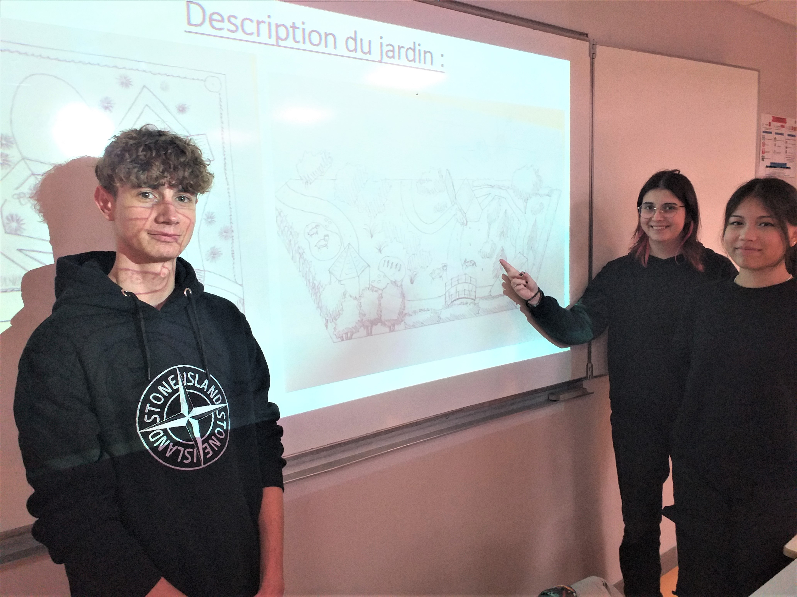

Photographie

Aménagement paysager

Présentation et évaluation du chantier
Le 4ème et dernier semestre est dédié à l’apprentissage de la gestion qu’il est nécessaire d’effectuer après un chantier d’aménagement paysager. Il intègre également la préparation à l’entrée dans le monde professionnel ou la poursuite d’études. Les cours comprennent :
Vous serez en mesure d’évaluer la performance économique d’un chantier. Vous posséderez les compétences pour diriger une entreprise dans le domaine de l’aménagement paysager.